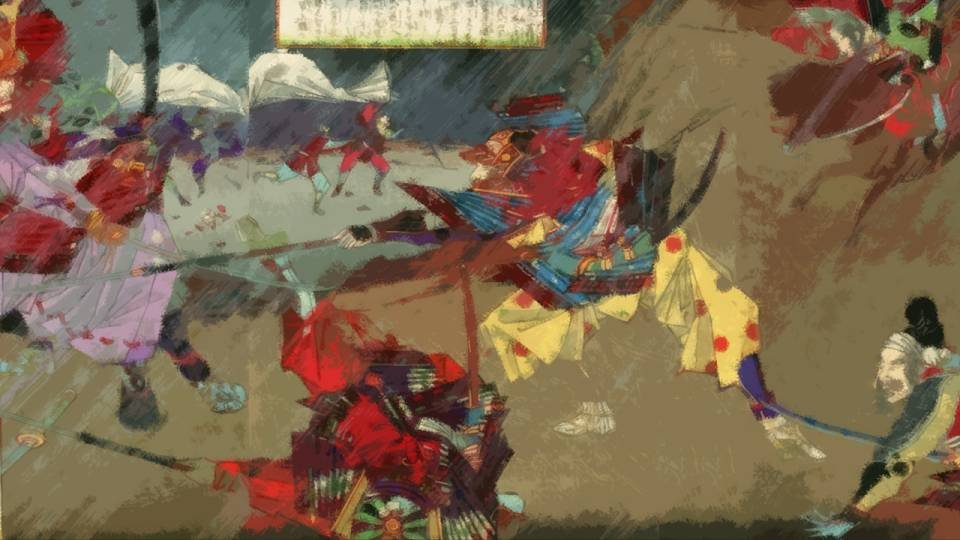

This scene is not unlocked yet in your progress
鬼神の王
家臣から送られた書簡
―― 薪 が燃える匂い。
そして温かな部屋。
目を開ける前から、ここはどこかの家の中であると悟る。
そして温かな部屋。
目を開ける前から、ここはどこかの家の中であると悟る。

オレは……
そうだ、あの巨大な生き物に突き飛ばされたんだ。
今思い返せばイノシシのようにも見えるが、あんな規格外のイノシシなど……。
きっと山が崩れて巨大な岩が転がってきただけだ。
今思い返せばイノシシのようにも見えるが、あんな規格外のイノシシなど……。
きっと山が崩れて巨大な岩が転がってきただけだ。
「おお、気がつきましたか」
男の声だ。
老人と言うほどではないが、オレよりもずっと年上だろう。
しかし……その話し方に違和感がある。
どうも、日の本の言葉にしては、抑揚に違和感が……。
男の声だ。
老人と言うほどではないが、オレよりもずっと年上だろう。
しかし……その話し方に違和感がある。
どうも、日の本の言葉にしては、抑揚に違和感が……。
「ああ、大きな怪我もなさそうですね」
何者だ？ この男は……。
以前、お館様を訪ねてきた西洋人がいたが、その者と風貌がよく似ている。
服装はオレたちと似ているが、顔や体格は明らかに違う。
いやでも、そんなことよりオレを助けてくれたことに違いはなさそうだ。
まずは礼を言わなくてはならない。
何者だ？ この男は……。
以前、お館様を訪ねてきた西洋人がいたが、その者と風貌がよく似ている。
服装はオレたちと似ているが、顔や体格は明らかに違う。
いやでも、そんなことよりオレを助けてくれたことに違いはなさそうだ。
まずは礼を言わなくてはならない。
「あの、オレを助けてくれたみたいで……
ありがたきことで……」
起き上がり姿勢を正すと、西洋人はより一層安堵の表情を見せる。
「はっはっは！ 旅のお方よ、ここは人が来ることなど滅多にない辺境の地だ。 発たれる前にここで十分に休養なさって下さい」
「はあ、それは本当にもったいなきことで……。 あ、申し遅れました。 オレは藤吉郎と申します」
起き上がり姿勢を正すと、西洋人はより一層安堵の表情を見せる。
「はっはっは！ 旅のお方よ、ここは人が来ることなど滅多にない辺境の地だ。 発たれる前にここで十分に休養なさって下さい」
「はあ、それは本当にもったいなきことで……。 あ、申し遅れました。 オレは藤吉郎と申します」
「私は、新村儀之助と申します。この村の医者をやっている者で。
あ、そうだ」
儀之助と名乗る西洋人は、隣の部屋に顔を向ける。
"Clientes para trazer uma refeicao."
わけの分からぬ言葉を話す儀之助。
名前は日本人でも、やっぱり西洋人か？
儀之助と名乗る西洋人は、隣の部屋に顔を向ける。
"Clientes para trazer uma refeicao."
わけの分からぬ言葉を話す儀之助。
名前は日本人でも、やっぱり西洋人か？
すると隣の部屋から1人の女が入ってきた。
「まあ、気がつかれたのですね。一晩眠っていたんですよ？ すぐにお食事の準備をしますね」
甲斐甲斐しく話しかけるこの女性は、どうみても日本人だ。
西洋人と日本人が住む村――いったいここはどこなんだ？
「まあ、気がつかれたのですね。一晩眠っていたんですよ？ すぐにお食事の準備をしますね」
甲斐甲斐しく話しかけるこの女性は、どうみても日本人だ。
西洋人と日本人が住む村――いったいここはどこなんだ？
「あの、儀之助殿、ここはどういった村で……」
「はっはっは！ やっぱり不思議に思われますかな！」
この村が不思議なところという自覚はあるようだ。
そしてそれを特に気にする様子もなく――。
「はっはっは！ やっぱり不思議に思われますかな！」
この村が不思議なところという自覚はあるようだ。
そしてそれを特に気にする様子もなく――。
「藤殿、ここは荒田という村です。
人の住む場所から何十里も離れた辺境の地。
何百年もの間、外界との接触がほとんどない孤立した村なんです」
 video: 山桜夜.wmv
video: 山桜夜.wmv――何百年も前、帝と太良氏の戦いに巻き込まれた止ん事無き方が、この地に逃れてきたのが始まりです。
彼は東の都へ逃れようとしたそうですが、道中であるこの地に惹かれ、ここにとどまったとされています。
ここの獣は皆大きく食料も豊か。
ひっそりと生きていく者にとってはまるで楽園のようなところです。
彼は東の都へ逃れようとしたそうですが、道中であるこの地に惹かれ、ここにとどまったとされています。
ここの獣は皆大きく食料も豊か。
ひっそりと生きていく者にとってはまるで楽園のようなところです。
video: 山桜夜.wmvそんなわけで、この村は排他的な側面があります。
大名の従者は一切受け付けず、どの領地にも属すこともない。
もし力ずくで攻めてくるものがいれば、我々は一丸となって追い払う。
それがこの荒田の村です。
大名の従者は一切受け付けず、どの領地にも属すこともない。
もし力ずくで攻めてくるものがいれば、我々は一丸となって追い払う。
それがこの荒田の村です。
「じゃあ、どうしてオレを保護して下さったのだ？
オレだって外界の者だが……」
「藤殿は旅のお方であろう？ 通りかかった者を見捨てるほどこの村は薄情ではありません。 事実、私も10年前にここで行き倒れていたところを、この村の者に助けられたのです。 ですから、私が藤殿を助けるのも道理。 1人はみんなのため、みんなは1人のため。 この村はこうやって今までひっそりと、そして力強く生き抜いてきたのです」
「藤殿は旅のお方であろう？ 通りかかった者を見捨てるほどこの村は薄情ではありません。 事実、私も10年前にここで行き倒れていたところを、この村の者に助けられたのです。 ですから、私が藤殿を助けるのも道理。 1人はみんなのため、みんなは1人のため。 この村はこうやって今までひっそりと、そして力強く生き抜いてきたのです」
「儀之助殿は10年前にここに来たと申されたが……
やっぱり、出身は西洋で？」
「はい、私は西洋から参りました。 しかし、私たちが流れ着いた東の都では、どうも我々のような異邦人は受け入れられなかったようで……」
「流れ着いた……とは？」
「はい、私は西洋から参りました。 しかし、私たちが流れ着いた東の都では、どうも我々のような異邦人は受け入れられなかったようで……」
「流れ着いた……とは？」
「我々は、西洋の母国から遠く離れた植民地、そこの管理を任されていました。
しかしそこで未曾有の災害があり、着の身着のまま、船で逃げてきましたが、流れ着いたのが、この国の東の都近くでした」
それで儀之助殿はこの地に根を下ろし、名前も日本風に改名し、このように村になじんで生活している。
それで儀之助殿はこの地に根を下ろし、名前も日本風に改名し、このように村になじんで生活している。
だが、オレにそんなことをするつもりはない。
オレは早く力のつく食い物を手に入れて尾張に帰らなくてはならない。
もう時間がないのだ。
オレは早く力のつく食い物を手に入れて尾張に帰らなくてはならない。
もう時間がないのだ。
「ここへたどり着いた西洋人は私だけでなく、現在20名ほどここで世話になっています。
みんなここの生活にもすっかり慣れ、名も日本風になっています」
「あの、儀之助殿、世話になっておいてあれですが、オレは先を急ぐので――」
と、先ほどの女性が部屋に入ってきた。
「あの、儀之助殿、世話になっておいてあれですが、オレは先を急ぐので――」
と、先ほどの女性が部屋に入ってきた。
「藤様、お待たせしました。これを食べれば、たちどころに元気になれますよ」
出された食事は、どうやら獣の肉を焼いたもののようだ。
これはイノシシの肉か？
急ぐ身ではあるが……一切れ口に入れてみる。
出された食事は、どうやら獣の肉を焼いたもののようだ。
これはイノシシの肉か？
急ぐ身ではあるが……一切れ口に入れてみる。
肉が口に触れる前から分かった。
鼻腔をくすぐる香りは、イノシシの肉にしてはあまりにも芳醇。
口に入れるとまるで雲のような柔らかさ。
飲み込むのがもったいないと思うほど、口いっぱいに広がる力強い滋味。
以前お館様に食わせてもらった選りすぐりの肉ですら、このイノシシ肉には遠く及ばない。
鼻腔をくすぐる香りは、イノシシの肉にしてはあまりにも芳醇。
口に入れるとまるで雲のような柔らかさ。
飲み込むのがもったいないと思うほど、口いっぱいに広がる力強い滋味。
以前お館様に食わせてもらった選りすぐりの肉ですら、このイノシシ肉には遠く及ばない。
確かにイノシシの肉ではある。
でも、オレの知っているイノシシとはまるで違う食い物。
そしてうまいだけでなく、身体中に力がみなぎってくるような滋養強壮効果もあるようだ。
でも、オレの知っているイノシシとはまるで違う食い物。
そしてうまいだけでなく、身体中に力がみなぎってくるような滋養強壮効果もあるようだ。
「この肉は、一体……！」
「やっぱり驚かれるでしょうなあ！ この辺でしか獲れない巨大なイノシシです。 この辺りの獣は大きく、そしてうまい。 昔、この地に根を下ろした村の開祖の気持ちがよく分かりますよ」
そうか、やっぱりオレにぶつかったのはイノシシだったわけか。
「やっぱり驚かれるでしょうなあ！ この辺でしか獲れない巨大なイノシシです。 この辺りの獣は大きく、そしてうまい。 昔、この地に根を下ろした村の開祖の気持ちがよく分かりますよ」
そうか、やっぱりオレにぶつかったのはイノシシだったわけか。
なるほど、この地から離れるのが惜しいと思わせる。
こんなものがウヨウヨいる地なら、きっと健康な毎日を送り長生きもできるだろう。
こんなものがウヨウヨいる地なら、きっと健康な毎日を送り長生きもできるだろう。
だが、オレが求めているのはこれではない。
確かにうまいし体力もつくだろうが、健康食を求めているのではない。
絶対に間川を倒すことのできる力のつく食い物が必要だ。
確かにうまいし体力もつくだろうが、健康食を求めているのではない。
絶対に間川を倒すことのできる力のつく食い物が必要だ。
だけど、あれほどに巨大なイノシシがいるなら、オレが今まで知らなかったような秘密があるのかもしれない。
もしこの地に、オレの求めるものがあるなら……。
もしこの地に、オレの求めるものがあるなら……。
「儀之助殿、どうしてこの山にはあのような大きい獣が？ やっぱり、何か秘密が？」
「んーどうでしょうなあ……。 単にこの地が肥沃なだけかと思いましたが…… やっぱりそれだけではないんじゃないかと、最近思い始めました。 ああ、私は医者です。 だから、この辺の動植物の生態についても調べているのですよ」
「んーどうでしょうなあ……。 単にこの地が肥沃なだけかと思いましたが…… やっぱりそれだけではないんじゃないかと、最近思い始めました。 ああ、私は医者です。 だから、この辺の動植物の生態についても調べているのですよ」
儀之助殿は笑いながら頭をかく。
医者である儀之助殿。
西洋の精神的文化と生物学的教養を持った人なんて、そう滅多にいるものではない。
この方なら、もしかして……。
医者である儀之助殿。
西洋の精神的文化と生物学的教養を持った人なんて、そう滅多にいるものではない。
この方なら、もしかして……。
「儀之助殿、折り入って相談があります」
オレは膝を折り、両手を床に着き儀之助殿の方を向く。
「ど、どうしました藤殿……。足を崩して下さい」
「実はオレ、麻生田家で台所奉行をやっている者です。 どうか……どうか、麻生田家を助けてほしいんです！」
オレは膝を折り、両手を床に着き儀之助殿の方を向く。
「ど、どうしました藤殿……。足を崩して下さい」
「実はオレ、麻生田家で台所奉行をやっている者です。 どうか……どうか、麻生田家を助けてほしいんです！」

――オレはここまで来た経緯を儀之助殿にお話しした。
オレがどうしてお館様に仕えているか。
間川がどのような動きをしているか。
どんな思いでここまでやってきたか。
こんな話を儀之助殿にするのは、危険なのではないかとも思った。
オレがどうしてお館様に仕えているか。
間川がどのような動きをしているか。
どんな思いでここまでやってきたか。
こんな話を儀之助殿にするのは、危険なのではないかとも思った。
なぜなら、この地の者は世間との関係を断った生活を送っている。
そしていかなる大名や地主が攻めてきても、それを追い払ってしまう。
相当な手練れがそろった集落なのだろう。
下手すれば、オレも外からの襲来者とみなされて……。
そしていかなる大名や地主が攻めてきても、それを追い払ってしまう。
相当な手練れがそろった集落なのだろう。
下手すれば、オレも外からの襲来者とみなされて……。
「藤殿、足を崩してください。
どのような気持ちでここまで来たか、よく分かりました」
儀之助殿の穏やかな声色に変わりはなかった。
そしてオレは何の駆け引きもなく、正直に思うことを述べた。
儀之助殿の穏やかな声色に変わりはなかった。
そしてオレは何の駆け引きもなく、正直に思うことを述べた。
オレたちは今、真正面の気持ちで向き合っている。
儀之助殿は、オレの気持ちに応えて下さるだろうか。
この地にはオレの望むものがあるのだろうか。
儀之助殿は、オレの気持ちに応えて下さるだろうか。
この地にはオレの望むものがあるのだろうか。
"Traga as drogas."
儀之助殿は西洋語で女性に声をかけると、女性はそのまま部屋から出て行ってしまった。
人払いをしたということは、何か重要な話をしようとしているのだろうか。
儀之助殿は西洋語で女性に声をかけると、女性はそのまま部屋から出て行ってしまった。
人払いをしたということは、何か重要な話をしようとしているのだろうか。
「藤殿……。
私は、あなたがここへ来たことを――
とても警戒している」
儀之助殿は声色を変えず、鋭い目でこちらを見る。
その青い目から、オレの心まで見透かすほどに鋭利な視線を送りつける。
でも、オレは何も隠し事などしていない。
でも、オレが隠し事をしていないからこそ、警戒されている。
儀之助殿は声色を変えず、鋭い目でこちらを見る。
その青い目から、オレの心まで見透かすほどに鋭利な視線を送りつける。
でも、オレは何も隠し事などしていない。
でも、オレが隠し事をしていないからこそ、警戒されている。
「あなたは、何としてでも麻生田家を守りたい。そう思っていますね？」
「はい、その通りです」
「もし私がそのお願いを断ったら、どうしますか？」
「え？」
「あなたは、このまま帰りますか？」
「はい、その通りです」
「もし私がそのお願いを断ったら、どうしますか？」
「え？」
「あなたは、このまま帰りますか？」
オレがここを追い払われたら……？
そしたらどうするだって？
これはどういうことを意味するのか……。
オレが追い払われたら……。
それはつまり、ここの食い物も、強さの秘密もあきらめるということ……。
そしたらどうするだって？
これはどういうことを意味するのか……。
オレが追い払われたら……。
それはつまり、ここの食い物も、強さの秘密もあきらめるということ……。
そうか……もしオレが追い払われたら、何としてでもこの地の強さの秘密を手に入れたいと思うだろう。
それをお館様に報告したら…… あのお館様のことだ。
西洋人の医者がいて、巨大な獣もいて、あらゆる侵攻も妨げてきた集落。
お館様が興味を持たないはずない。
この地に攻め入ることだってあり得る。
それをお館様に報告したら…… あのお館様のことだ。
西洋人の医者がいて、巨大な獣もいて、あらゆる侵攻も妨げてきた集落。
お館様が興味を持たないはずない。
この地に攻め入ることだってあり得る。
つまり儀之助殿が言いたいのは――。
・大人しく我々に強さの秘密を明かす
・オレたちと戦をする
この2つの選択しか残されていないと言っている。
いや、もう1つ選択がある。
オレをこの場で殺すことだ……！
・大人しく我々に強さの秘密を明かす
・オレたちと戦をする
この2つの選択しか残されていないと言っている。
いや、もう1つ選択がある。
オレをこの場で殺すことだ……！
――しばらくの間、この部屋は沈黙だけが森と鳴り響く。
儀之助殿は姿勢も視線も変えず、オレをじっと見ている。
オレの額から、冷や汗が垂れる。
さあ……どうする？
どうすれば……！？
儀之助殿は姿勢も視線も変えず、オレをじっと見ている。
オレの額から、冷や汗が垂れる。
さあ……どうする？
どうすれば……！？
「失礼いたします」
例の女性の声だ。
同時にオレと儀之助殿は少しだけ身体をほぐすように微動させる。
緊張した空気がほんのわずかだけほぐれる。
例の女性の声だ。
同時にオレと儀之助殿は少しだけ身体をほぐすように微動させる。
緊張した空気がほんのわずかだけほぐれる。
女性は手に何かを持っているようだ。

あれは確かガラスと言われる西洋の容器だ。
その中に、桃色の氷のような塊がいくつも収められている。
儀之助殿は容器を受け取ると、それを眺めながら言う。
その中に、桃色の氷のような塊がいくつも収められている。
儀之助殿は容器を受け取ると、それを眺めながら言う。
「藤殿……。
もしあなたが嘘をついたり、私の腹を探るような言い方をしたりしていたら――
今頃、あなたは死んでいたでしょう」
と、この家から遠ざかっていくいくつもの足音。
と、この家から遠ざかっていくいくつもの足音。
オレは今ようやく気づいた。
この家は、ここの住人たちに取り囲まれていた。
もしオレがおかしな真似をしていたら……。
この家は、ここの住人たちに取り囲まれていた。
もしオレがおかしな真似をしていたら……。
儀之助殿は、ガラスの容器をオレの前に置く。
「あなたは何の駆け引きもせず、腹の内を正直に仰った。 それがどのような危険をはらんでいるのか、よくお分かりでしょう。 だから、私はあなたを信用することにします。 たった1人でこんな軽装でここまで来て、さぞ大変な事だったと思います。 藤殿は、純粋に麻生田家を守りたいと思っていらっしゃいますね」
「あなたは何の駆け引きもせず、腹の内を正直に仰った。 それがどのような危険をはらんでいるのか、よくお分かりでしょう。 だから、私はあなたを信用することにします。 たった1人でこんな軽装でここまで来て、さぞ大変な事だったと思います。 藤殿は、純粋に麻生田家を守りたいと思っていらっしゃいますね」
儀之助殿の目は、また柔和なものに戻っていた。
本当にたったこれだけのやり取りで信用して下さるというのだろうか。
本当にたったこれだけのやり取りで信用して下さるというのだろうか。
「それに、風のうわさで麻生田の殿様はうつけと呼ばれながら、革新的な政治を敢行し、そして西洋文化にも大変興味を持っていると聞いております。
だから私は間川よりも、麻生田の殿様に活躍してほしい、そのように思っています」
「ちょ、ちょっと待ってください、儀之助殿！
オレの言葉や政治情勢を 鑑 みて信用して下さると言われること、とても嬉しく思います！
しかし、それはあまりにも人が良すぎでは……？
オレが儀之助殿の裏をかいて騙していたら、どうするおつもりで……！？」
「あなたは、できる限り出世し、上に上りつめたいと仰っていた。
そのために必要なものは、何だか分かりますか？」
「出世に必要なもの……？」
「出世に必要なもの……？」
「軍事力、権力、そして……
人です。
武力も権力も金も、人があって初めて意味を成すものです。
もしあなたがあちこちで敵を作れば、出世の道はあっという間に閉ざされてしまう。
台所奉行まで任された藤殿なら、お分かりでしょう？」
正直、そんなこと言われてもピンとこない。
正直、そんなこと言われてもピンとこない。
確かに人は大事だと思う。
どんなに武に秀でた人間でも、一騎当千を文字通りこなすことなど不可能。
相応の人数と仲間が必要なことは百も承知だ。
それは戦に限らず、どんなことにだって人は必要だ。
どんなに武に秀でた人間でも、一騎当千を文字通りこなすことなど不可能。
相応の人数と仲間が必要なことは百も承知だ。
それは戦に限らず、どんなことにだって人は必要だ。
「この荒田の地には、開祖の言い伝えがあります。
1人はみんなのために、みんなは1人のために。
私が10年前、ここに来た時にも言われたことですが、これは虫にも動物にも通じることなんです。
1人を生かすために、みんなを生かすために、そのために働くことこそが、自分自身が生きる道であると」
「藤殿、あなたはどのようにすれば人を動かすことができるか知っている。
いや、今はまだ気づいていなくても、あなたには人を動かし、心を動かす才がある。
きっと、この国を動かせるほどに、人の心を見て、聞いて、そして応えることができる」
「そんな、オレがそんな――」
「でも、そうでなければ、あなたは出世できませんよ？」
「………… 確かに、そうですね……」
「藤殿がここで行き倒れたのは、きっと神の思し召し。 私はそう思っています」
と、儀之助殿は、瓶を手に取る。
「でも、そうでなければ、あなたは出世できませんよ？」
「………… 確かに、そうですね……」
「藤殿がここで行き倒れたのは、きっと神の思し召し。 私はそう思っています」
と、儀之助殿は、瓶を手に取る。
「この中にはドローガという、この地の桜から作られる薬の結晶が10ほど入っています。
これを戦の直前に火であぶり、兵たちに煙を吸わせてください。
臭いはありません。これ1粒で、1000人には使えます。
そして、1時間以内に戦を終わらせてください。薬の効果は1時間ほどです。
これがあれば、兵は皆、鬼神のごとき力を手に入れることができます」
「鬼神の力……？」
「どうか、これを天下のために、使ってください。 これは麻生田家ではなく、藤殿に託します。 あなたならきっと……」
「どうか、これを天下のために、使ってください。 これは麻生田家ではなく、藤殿に託します。 あなたならきっと……」
――オレはもう一晩だけ世話になり、荒田を去った。
相変わらずの軽装に加わったのは、数日分の食料とこのドローガと言う未知の薬。
これで……これで麻生田家は救われる。
しかし、それには条件があった。
相変わらずの軽装に加わったのは、数日分の食料とこのドローガと言う未知の薬。
これで……これで麻生田家は救われる。
しかし、それには条件があった。
video: 山桜夜.wmv決して、この地のことは他言してはならない。
例えお館様相手であっても、絶対に口外してはならない。
もし、約束を破るようなことがあれば……。
例えお館様相手であっても、絶対に口外してはならない。
もし、約束を破るようなことがあれば……。
video: 山桜夜.wmv分かっている。
100人ほどしか住んでいない集落が、これまでいかなる侵攻も退けてきた歴史がある。
おそらく、この地を敵に回すことは間川ほどでないにしても厄介だ。
それに、儀之助殿はオレを信用してこれを託して下さったのだ。
この恩義に反することなど、オレの主義ではない。
100人ほどしか住んでいない集落が、これまでいかなる侵攻も退けてきた歴史がある。
おそらく、この地を敵に回すことは間川ほどでないにしても厄介だ。
それに、儀之助殿はオレを信用してこれを託して下さったのだ。
この恩義に反することなど、オレの主義ではない。
video: 山桜夜.wmvこの瓶の中には、何とかと言う薬の結晶が10ほど入っている。
今度の間川との戦いで、2つほど使うことになるだろう。
さて……残りをどのように活用するか。
それ次第で、オレがどこまで伸びるかが試されるのだ。
今度の間川との戦いで、2つほど使うことになるだろう。
さて……残りをどのように活用するか。
それ次第で、オレがどこまで伸びるかが試されるのだ。
video: 山桜夜.wmvそれと、あとはお館様にどう報告するかだ。
目的のものは見つからなかったが、間川に不穏な動きがあるとお伝えしようか。
これなら充分に有意な情報だし、事前に準備もできよう。
目的のものは見つからなかったが、間川に不穏な動きがあるとお伝えしようか。
これなら充分に有意な情報だし、事前に準備もできよう。
――祀耀310年六月一二日。

間川基義が西の都へ向かっていると、豊吉から話があった。
しかし、どうにも様子がおかしい。
2万以上の兵を従えての移動―― これは間川の全兵力に等しいのだ。
いくら帝に会うためとはいえ、これでは戦する気満々ではないか……？
しかし、どうにも様子がおかしい。
2万以上の兵を従えての移動―― これは間川の全兵力に等しいのだ。
いくら帝に会うためとはいえ、これでは戦する気満々ではないか……？
そして、四河地域の平松泰基（後の戸川保家）にまで呼応を求め、まさに全兵力の動員。
違う――これは麻生田への侵攻だ……！
違う――これは麻生田への侵攻だ……！
 video: 炎.wmv
video: 炎.wmv――午前10時。
平松泰基の部隊は次々と麻生田家の 砦 を攻め、守りにあたっていた麻生田軍は壊滅。
しかし、麻生田本隊が樽狭間へ向かう時間稼ぎにはなった。
残りの麻生田の兵力は約2000。
この10倍の兵力差を埋めるためには、やはり……。
平松泰基の部隊は次々と麻生田家の 砦 を攻め、守りにあたっていた麻生田軍は壊滅。
しかし、麻生田本隊が樽狭間へ向かう時間稼ぎにはなった。
残りの麻生田の兵力は約2000。
この10倍の兵力差を埋めるためには、やはり……。
video: 炎.wmvこいつは火であぶって使うもの。
そして効果の持続時間は1時間ほど。
この薬を手に入れたことはお館様にも言っていない。
儀之助殿は、このオレに下さったのだ。
これは、オレのためだけに使うことにする。
そして効果の持続時間は1時間ほど。
この薬を手に入れたことはお館様にも言っていない。
儀之助殿は、このオレに下さったのだ。
これは、オレのためだけに使うことにする。
――13時、樽狭間の地。

麻生田の兵2000人が集まった。
先程から雲行きが怪しく、風が出てきた。
もし雨に降られでもしたら、薬を使うことはできない。
おそらくお館様は、豪雨で馬の足音をかき消して奇襲をかけるおつもりだろう。
よし、頃合いだ。
先程から雲行きが怪しく、風が出てきた。
もし雨に降られでもしたら、薬を使うことはできない。
おそらくお館様は、豪雨で馬の足音をかき消して奇襲をかけるおつもりだろう。
よし、頃合いだ。
草むらに隠れて火を起こし、風上からあぶった薬の煙を麻生田本隊に送りつける。
さあ、どうだ、どうなんだ？
これがあれば、鬼神の力が手に入るのだろ？
さあ、どうだ、どうなんだ？
これがあれば、鬼神の力が手に入るのだろ？
 video: 雨1.wmv
video: 雨1.wmvと、ついに樽狭間の地に豪雨が降り出した。
同時に本隊の先 備の方から聞こえる雄叫び。
ついに突撃のようだ。
オレは食料係だから直接戦には出ないが、たった今、最高のごちそうを送り届けたはずだ。
さあ、やってくれ……やってくれ、鬼神たちよ！
同時に本隊の先 備の方から聞こえる雄叫び。
ついに突撃のようだ。
オレは食料係だから直接戦には出ないが、たった今、最高のごちそうを送り届けたはずだ。
さあ、やってくれ……やってくれ、鬼神たちよ！
video: 雨1.wmv樽狭間の低地に向かう馬の足音に、足軽たちの雄叫び。
オレは文字通り、高みの見物。
当初の計画通り、間川軍はオレが用意した商人たちに足止めされ、休憩中だった。
そこを奇襲すれば、最初は有利に進めるだろう。
しかし、それでも10倍の兵力差をひっくり返すのは難しい。
あとは――儀之助殿を信じる。
オレは文字通り、高みの見物。
当初の計画通り、間川軍はオレが用意した商人たちに足止めされ、休憩中だった。
そこを奇襲すれば、最初は有利に進めるだろう。
しかし、それでも10倍の兵力差をひっくり返すのは難しい。
あとは――儀之助殿を信じる。

video: 雨1.wmv――オレは自分の目を疑った。
足軽たちは8尺ほど飛び上がり、馬にも負けぬ速さで走り抜ける。
騎乗の兵たちも同じ人間とは思えぬほどの動き。
目の前に現れた2000の鬼神相手に、恐れおののく2万の凡兵たち。
そして麻生田の兵たちは自分の信じられないような力を実感し、さらに士気を高める。
足軽たちは8尺ほど飛び上がり、馬にも負けぬ速さで走り抜ける。
騎乗の兵たちも同じ人間とは思えぬほどの動き。
目の前に現れた2000の鬼神相手に、恐れおののく2万の凡兵たち。
そして麻生田の兵たちは自分の信じられないような力を実感し、さらに士気を高める。
video: 雨1.wmvまさに一騎当千。
1人の兵が何十人もの兵をバッタバッタとなぎ倒し、本陣へと瞬く間に推し進んでいく。
儀之助殿、これは本当にすごい薬だ……！
オレの想像以上の効果だ！
1人の兵が何十人もの兵をバッタバッタとなぎ倒し、本陣へと瞬く間に推し進んでいく。
儀之助殿、これは本当にすごい薬だ……！
オレの想像以上の効果だ！
video: 雨1.wmv樽狭間に降りしきる豪雨に負けじと、オレは狂喜の雄叫びを上げる。
これが叫ばずにいられようか。
オレは無敵の薬を手に入れたのだ。
これさえあれば、麻生田家はいかなる敵にも負けない！
オレにはもう恐れるものなど何もない！
これが叫ばずにいられようか。
オレは無敵の薬を手に入れたのだ。
これさえあれば、麻生田家はいかなる敵にも負けない！
オレにはもう恐れるものなど何もない！
video: 雨1.wmvもはや間川の滅亡は見えている。
今オレの頭の中にあるのは、敵を作りやすいお館様亡きあと、一体誰が後を引き継ぐのか――。
そんなの、お館様のそばで手柄を上げ続けた者に決まっている！
嫌われ役はお館様に任せ、その後はオレが天下を治めるのだ。
今オレの頭の中にあるのは、敵を作りやすいお館様亡きあと、一体誰が後を引き継ぐのか――。
そんなの、お館様のそばで手柄を上げ続けた者に決まっている！
嫌われ役はお館様に任せ、その後はオレが天下を治めるのだ。
video: 雨1.wmv――豪雨が弱まる頃には、すでに間川は事実上の滅亡を迎えていた。
無謀とも思われた間川への抗戦は、麻生田の勝利に終わった。
無謀とも思われた間川への抗戦は、麻生田の勝利に終わった。
Read ✓ Next: 吾大の花見 →